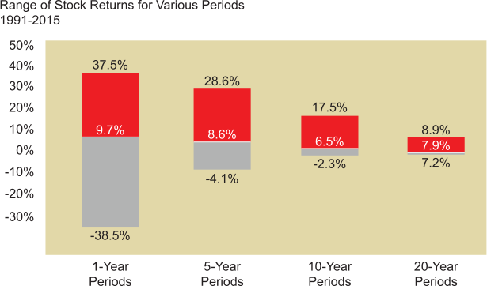

A final issue related to asset allocation is time horizon for the investor related to the goal. While there are typically multiple goals, each with their own time horizon, this issue becomes very important as longer time periods typically make greater short-term risk more tolerable.
The impact of time can be illustrated by breaking the past 25 years into different time periods. If each year is taken as an independent time period, the range of returns from year to year is very wide, with the potential for very significant losses in any given year. But when the past 25 years are broken into time periods of 5 years each, the range narrows considerably.
Break it into 10 and 20-year periods, and the range narrows further, with neither offering a time when the return was negative. This data confirms that for longer holding periods, the probability of negative returns decreases, and the gap between the maximum and minimum total return is reduced.
